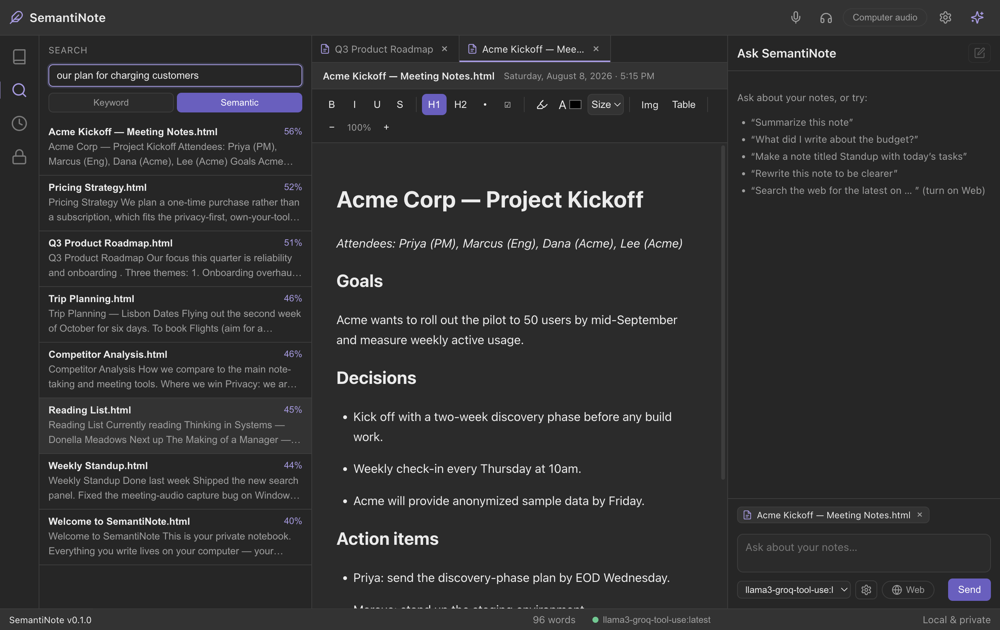
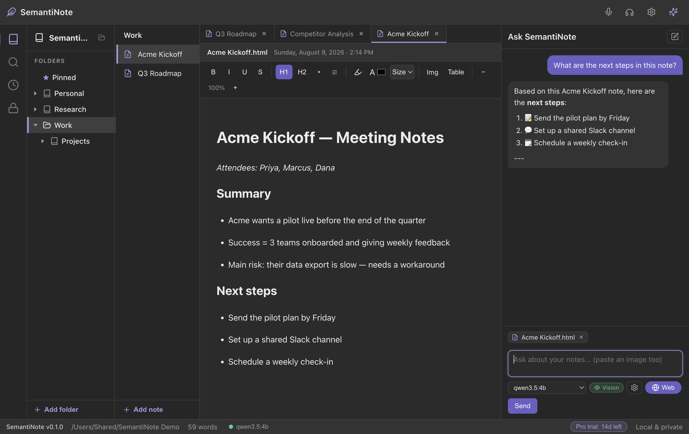
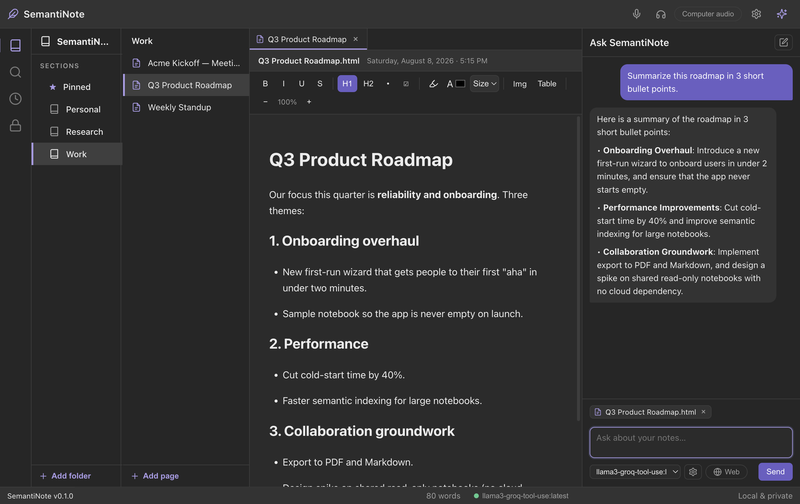
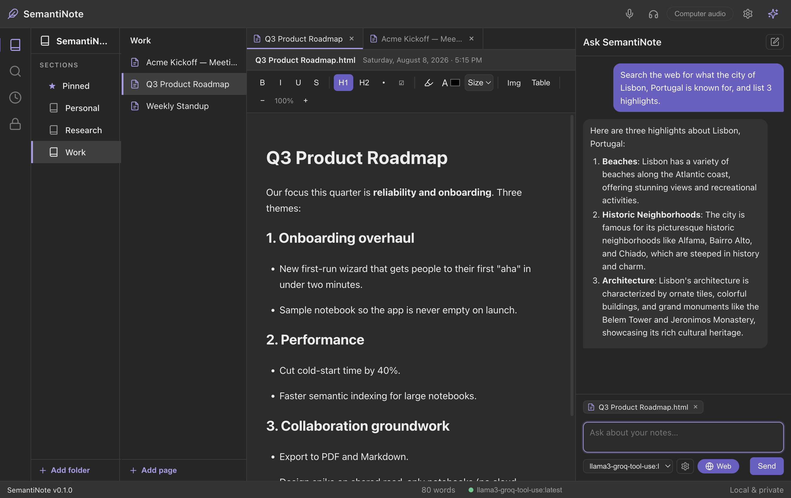
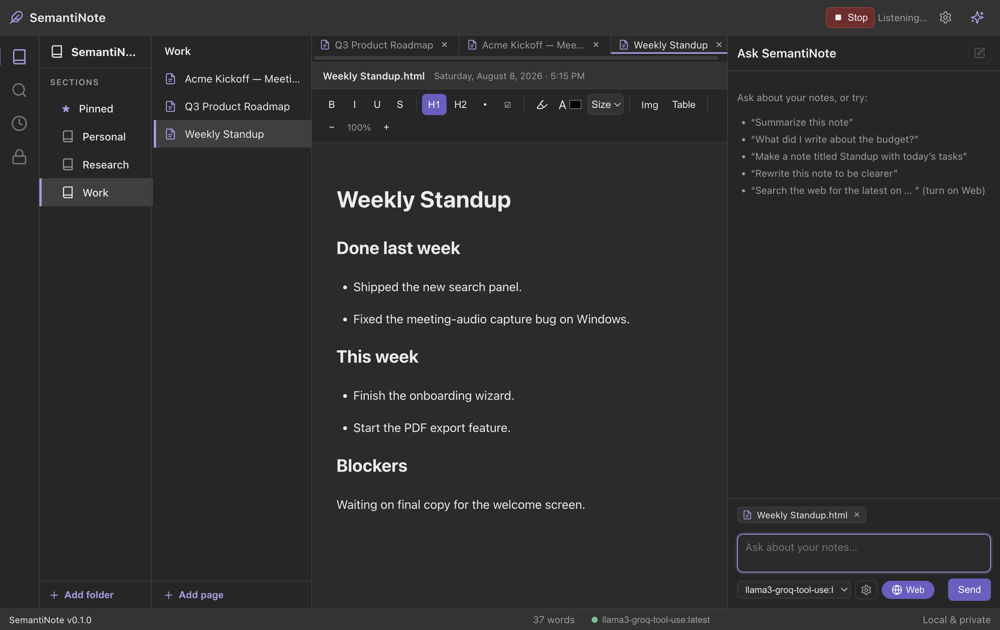
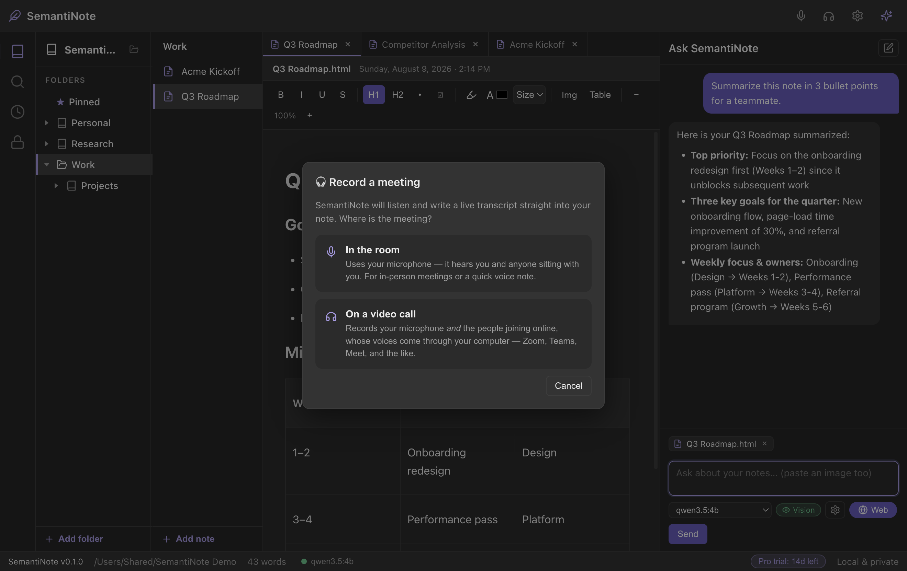
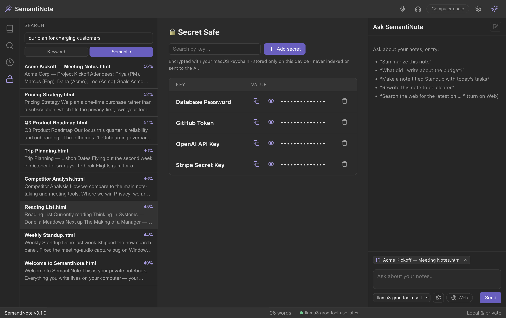
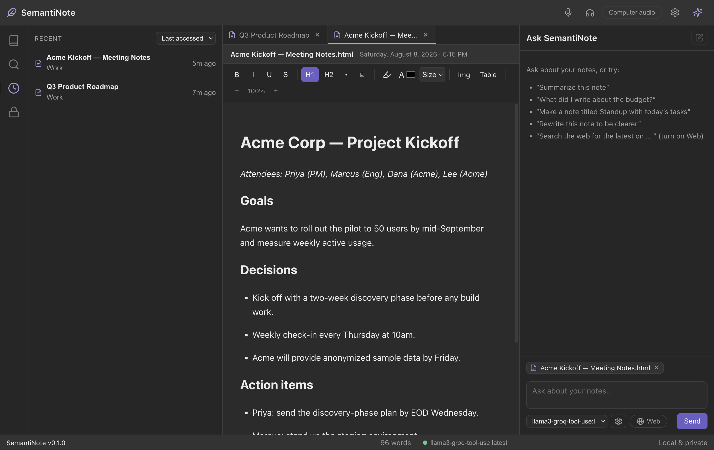

A full notebook, a private AI, voice and meeting capture, and a vault for your secrets — working together on your device, offline.
Search the way you think. SemantiNote understands the meaning of your notes, so you can find "the budget concerns from last month" without remembering a single exact word you wrote. No more scrolling through folders hoping to spot it.
Only finds exact word matches.
Finds notes by what they're about.

Ask a question in plain English and get an answer built from your own notes — with the exact notes it drew from cited right in the reply. It's like having a second brain that has read everything you ever wrote.

Drowning in a long note or a rambling meeting transcript? Ask for a summary, a bullet list of action items, or a cleaner structure. SemantiNote turns your raw thoughts into something you'd actually re-read.

When you want to double-check something from a meeting or fill a gap in your notes, flip on web search. SemantiNote looks it up, brings back sources, and you decide what to keep — you're always in control of what goes online.

Some thoughts are faster spoken than typed. Hit dictate and just talk — SemantiNote writes it down for you, live, and completely offline. No transcription service, no upload.

Record your Teams, Zoom, Slack or Discord meetings directly into a note. SemantiNote mixes your microphone with your computer's audio, so it hears both you and everyone else on the call — then you can ask the AI what happened.

A built-in vault for the things you shouldn't paste into a plain note — API keys, passwords, license codes. Everything's encrypted on your machine using your operating system's secure keychain, searchable by name, and revealed only when you ask.

Your most recent work is always one click away. Switch between "last accessed" and "last edited," each with its date, so you can get right back to whatever you were just working on.

Formatting, highlights, colors, images you can resize, and tables — write real documents, not just plain text.
Notes, code, JSON, markdown, plain text — create a file, name it anything, and get the right editor automatically.
Open several notes at once in browser-style tabs and flip between them as you work.
Pin the notes you use most and color-code your folders so your notebook stays organized at a glance.
Lock any single note with a password — it's encrypted on disk and only you can open it.
A native desktop app on both platforms, with the exact same private, offline experience.